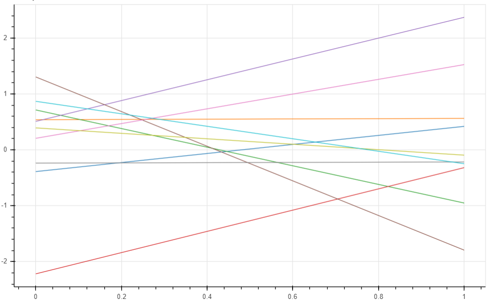
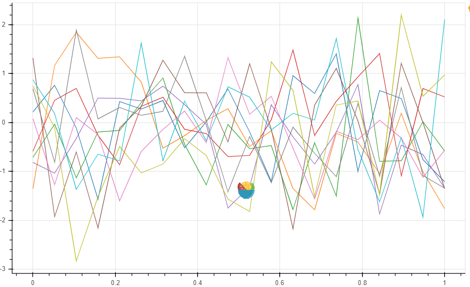
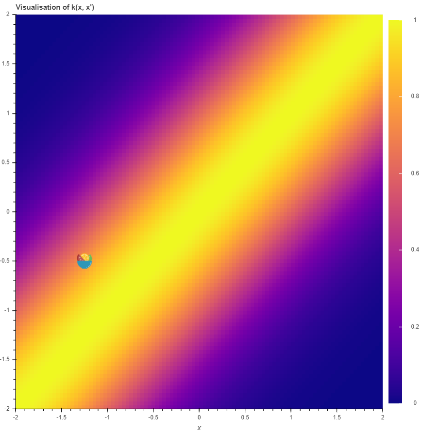
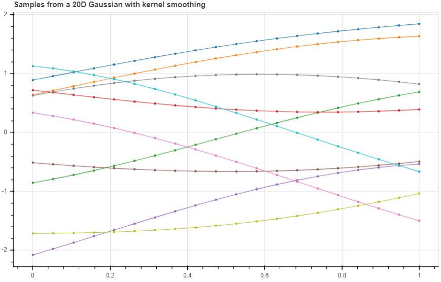
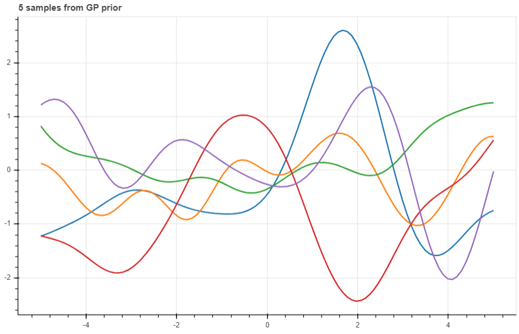
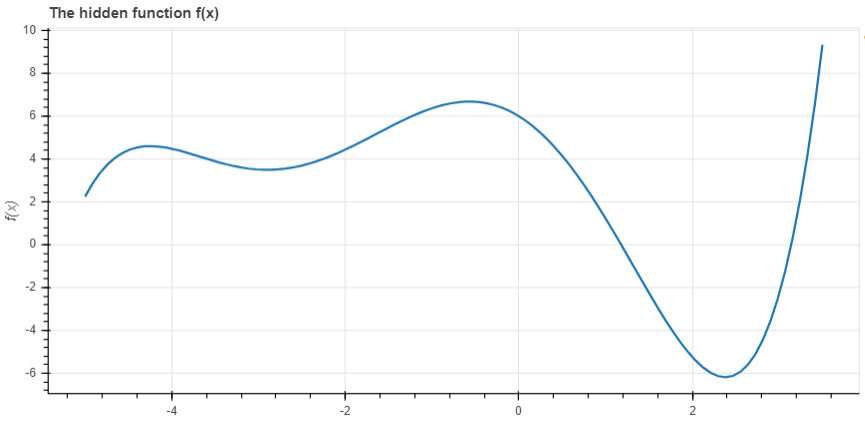
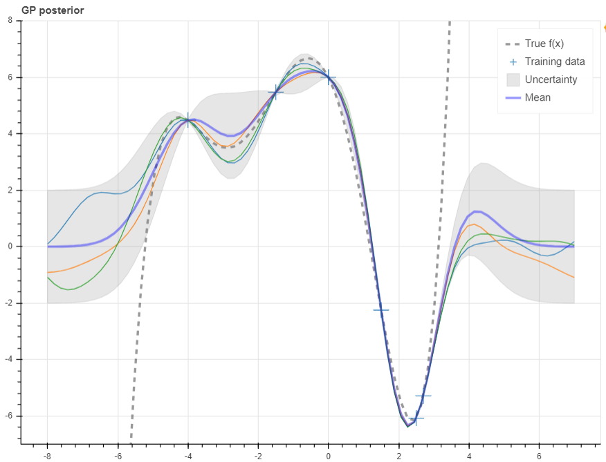

- 假设我们需要求一个hidden function
- 我们有 且
- 我们希望使用 预测未被观测到的
假设一个2D的Gaussian:
正常情况下, 我们可以做成3D的probability density钟图. 这里我们选择两个值, 和 , 然后采样10次, 并做出线图.
def plot_unit_gaussian_samples(D):
p = figure(plot_width=800, plot_height=500,
title='Samples from a unit {}D Gaussian'.format(D))
xs = np.linspace(0, 1, D)
for color in Category10[10]:
ys = np.random.multivariate_normal(np.zeros(D), np.eye(D))
p.line(xs, ys, line_width=1, color=color)
return p
show(plot_unit_gaussian_samples(2))
如果升级到20D,则
show(plot_unit_gaussian_samples(20))
如上图, 我们这在分别根据高斯分布取值.
multivariate Gaussian 有两个参数, 分别是mean and covariance matrix.
-
如果我们改变mean, 则会改变整体的走势(图中直线会整体上下移动). 但是仍然解决不了波动的的问题. 所以我们设置GP的mean为0, 因为这样足以估算函数.
-
如果两个点靠的比较近, 那么我们期望他们的值也是相近的. 相邻的随机变量在依据joint distribution采样时有相似的值(比如, high covariance). 这些点的covariance在Gaussian中的covariance matrix定义, 假设我们有 dimensional Gaussian 模型, covariance matrix 是 , 它的-th元素是.
Smoothing with Kernels
使用squared exponential kernel 作为 covariance function:
当时结果为1, 而当距离变大时趋近于1
def k(xs, ys, sigma=1, l=1):
"""Sqared Exponential kernel as above but designed to return the whole
covariance matrix - i.e. the pairwise covariance of the vectors xs & ys.
Also with two parameters which are discussed at the end."""
# Pairwise difference matrix.
dx = np.expand_dims(xs, 1) - np.expand_dims(ys, 0)
return (sigma ** 2) * np.exp(-((dx / l) ** 2) / 2)
def m(x):
"""The mean function. As discussed, we can let the mean always be zero."""
return np.zeros_like(x)画图:
N = 100
x = np.linspace(-2, 2, N)
y = np.linspace(-2, 2, N)
d = k(x, y)
color_mapper = LinearColorMapper(palette="Plasma256", low=0, high=1)
p = figure(plot_width=400, plot_height=400, x_range=(-2, 2), y_range=(-2, 2),
title='Visualisation of k(x, x\')', x_axis_label='x',
y_axis_label='x\'', toolbar_location=None)
p.image(image=[d], color_mapper=color_mapper, x=-2, y=-2, dw=4, dh=4)
color_bar = ColorBar(color_mapper=color_mapper, ticker=BasicTicker(),
label_standoff=12, border_line_color=None, location=(0,0))
p.add_layout(color_bar, 'right')
show(p)
假设有两个随机变量,在 有 (既离得越近就有更高的covariance)
使用kernel function, 计算k(xs, xs)可以获得ys. 现在我们试着画之前的10个样本的20D Gaussian, 但这次我们使用计算出来的covariance matrix.
p = figure(plot_width=800, plot_height=500)
D = 20
xs = np.linspace(0, 1, D)
for color in Category10[10]:
ys = np.random.multivariate_normal(m(xs), k(xs, xs))
p.circle(xs, ys, size=3, color=color)
p.line(xs, ys, line_width=1, color=color)
show(p)
似乎有点规律可寻了
扩大输入的维度
n = 100
xs = np.linspace(-5, 5, n)
K = k(xs, xs)
mu = m(xs)
p = figure(plot_width=800, plot_height=500)
for color in Category10[5]:
ys = np.random.multivariate_normal(mu, K)
p.line(xs, ys, line_width=2, color=color)
show(p)

Making Predictions using the Prior & Observations
现在我们已经通过functions来获得一个distribution, 那么如何训练数据来获得hidden function呢.
首先, 我们需要training data.
Target Function
我们选用5次多项式:
# coefs[i] is the coefficient of x^i
coefs = [6, -2.5, -2.4, -0.1, 0.2, 0.03]
def f(x):
total = 0
for exp, coef in enumerate(coefs):
total += coef * (x ** exp)
return total
xs = np.linspace(-5.0, 3.5, 100)
ys = f(xs)
p = figure(plot_width=800, plot_height=400, x_axis_label='x',
y_axis_label='f(x)', title='The hidden function f(x)')
p.line(xs, ys, line_width=2)
show(p)
Getting into the Maths
到目前我们使用multivariate normal来获得:
其中 , 这是prior distribution.
我们有一些训练数据, 和 . 我们现在又一些新的数据, 我们希望预测
x_obs = np.array([-4, -1.5, 0, 1.5, 2.5, 2.7])
y_obs = f(x_obs)
x_s = np.linspace(-8, 7, 80)根据GP的定义, 我们有
其中, ,
但是这其实计算的是, 而我们希望的是.
Conditioning Multivariate Gaussians
如果我们有和的joint distribution, 根据这个公式我们可得:
\begin{align} p(\mathbf{y}_*\vert \mathbf{x}_*, \mathbf{x}, \mathbf{y})&=\mathcal{N}(\mathbf{y}_*\vert \mu_*, \Sigma_*)\\ \mu_*&=m(\mathbf{x}_*)+\mathbf{K}_*^T\mathbf{K}^{-1}(\mathbf{y}-m(\mathbf{x}))\\ \Sigma_*&=\mathbf{K}_{**}-\mathbf{K}_*^T\mathbf{K}^{-1}\mathbf{K}_* \end{align}
K = k(x_obs, x_obs)
K_s = k(x_obs, x_s)
K_ss = k(x_s, x_s)
K_sTKinv = np.matmul(K_s.T, np.linalg.pinv(K))
mu_s = m(x_s) + np.matmul(K_sTKinv, y_obs - m(x_obs))
Sigma_s = K_ss - np.matmul(K_sTKinv, K_s)这里我们画出±2 standard deviations的预测值
p = figure(plot_width=800, plot_height=600, y_range=(-7, 8))
y_true = f(x_s)
p.line(x_s, y_true, line_width=3, color='black', alpha=0.4,
line_dash='dashed', legend='True f(x)')
p.cross(x_obs, y_obs, size=20, legend='Training data')
stds = np.sqrt(Sigma_s.diagonal())
err_xs = np.concatenate((x_s, np.flip(x_s, 0)))
err_ys = np.concatenate((mu_s + 2 * stds, np.flip(mu_s - 2 * stds, 0)))
p.patch(err_xs, err_ys, alpha=0.2, line_width=0, color='grey',
legend='Uncertainty')
for color in Category10[3]:
y_s = np.random.multivariate_normal(mu_s, Sigma_s)
p.line(x_s, y_s, line_width=1, color=color)
p.line(x_s, mu_s, line_width=3, color='blue', alpha=0.4, legend='Mean')
show(p)

参考:
http://bridg.land/posts/gaussian-processes-1
https://www.pianshen.com/article/2919365756/
https://www.jiqizhixin.com/articles/2019-02-12-3
http://katbailey.github.io/post/gaussian-processes-for-dummies/